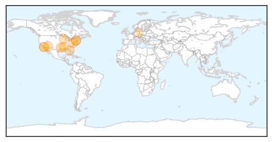
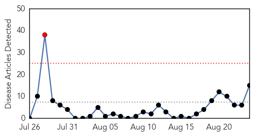

West Nile Virus
30-Day Web Trend
1 alerts, 0 warnings

30-Day Twitter Trend
0 alerts, 0 warnings

Article Locations
Article Confidences

Top Articles:
- 0.967
- Department of Health Confirms Case of West Nile Virus in D.C.
- 0.963
- 2 new West Nile virus cases confirmed in Mississippi
- 0.948
- West Nile virus cases reported in Dona Ana County
- 0.946
- Rare Virus Outbreak Means Maricopa County Mosquitos Doubly Dangerous
- 0.907
- West Nile virus detected in Portage County
- 0.860
- Health advisory in effect in Pinellas CountyHealth News
- 0.857
- State Mosquito Program Reports Increase in Mosquitoes Testing Positive for West Nile Virus
- 0.811
- Reports of West Nile starting to increase
- 0.810
- Del Mar man hospitalized after testing positive for West Nile Vi
- 0.766
- West Nile Virus hospitalizes 73-year-old man in San Diego region
- 0.695
- West Nile virus detected in Delaware County
- 0.681
- Dallas Co. Health Confirms 2 New West Nile Cases
- 0.643
- Health department urges residents to be vigilant against mosquitos
Top Tweets:
-
No tweets found for Aug 24, 2015
MERS
30-Day Web Trend
1 alerts, 0 warnings

30-Day Twitter Trend
2 alerts, 0 warnings
Article Locations

Article Confidences

Top Articles:
- 0.999
- MERS cases from Riyadh still surging
- 0.999
- New cases of MERS, deadly virus found in Saudi Arabia SouthEast ASIA News
- 0.997
- 2 more Pinoys confirmed with Mers-CoV
- 0.997
- Two Filipino nurses in Saudi hospital ICU for MERS virus, says DFA
- 0.997
- MERS update in Riyadh: 90 cases and counting in August
- 0.996
- WSU News Washington State University
- 0.992
- Stay away from camels, govt tells pilgrims
- 0.978
- Deadly virus infects 4 OFWs
- 0.975
- MERS death toll in Saudi Arabia reaches 480
- 0.954
- DFA: Four Filipinos in Riyadh diagnosed with MERS
- 0.951
- Riyadh leads in MERS infections
- 0.946
- Philstar Mobile
- 0.938
- 4 Pinoys contract MERS-CoV in Saudi
- 0.935
- 4 Philippine nurses have MERS in Saudi
- 0.860
- Muslim Practice Of Drinking Camel Urine Causing Huge Spike in Saudi MERS Infections
Top Tweets:
-
No tweets found for Aug 24, 2015